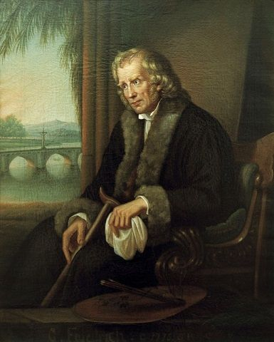
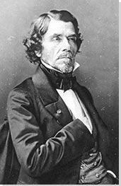
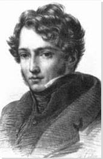

The Romanticism Movement began in the late 18th century and continued into the 19th century. It was created when people realized that in order to better interpret the world, sense and order were not the only factors to consider. To view the world fully, sense and emotions were needed as well. This movement came in response to the Enlightenment movement and how greatly it was rationalized. The emotions that the Romantic Movement focuses on are fear, horror, awe, and it focuses on complexities of nature. The subjects that appear in romantic paintings are nationalism, subjectivity, and justice and equality. Techniques that appear in Romanticism art are small strokes, unrefined lines and strokes, and dramatic colorations.
This painting, created in 1818 shows a man standing on top of a cliff, looking over at the foggy terrain below. The man's face cannot be seen, but the environment can help provide some context. The cool blue gray gives a sense of tranquility as most of the world is obscured below. The time of day being daytime also gives a lighthearted feeling, which would be different if it was night.
The qualities of Romanticism which can be seen here are shown with the foreground having the most bold colors since it is closest to the viewer, the midground with dark colors being obscured by the clouds, and the background which is almost completely hidden. As the background loses focus, it shows the looser and relaxed paint strokes of Romanticism with dark browns and blacks.

This painting was created in 1830 and has less of the background visible. This painting utilizes emotion and color as its main storyteller. The colors and 'Liberty' herself personified show triumph as she stands over the bodies of fallen soldiers. She has a blank expression which can be interpreted as determination.
Her dress is illuminated with a desaturated yet light yellow and acts as a beacon of light. You can tell this is a Romanticism painting because of the desaturated colors, the people who fade away into the background, and the lighting illuminating Liberty.

"The Hay Wain" was created in 1821 and has nature as the main subject. The lighting in this painting is less defined and shows a shadow with the trees in the center. In the foreground, the shore of the lake, the cart in the water, and the dog, and while there are patches of sun, this would be considered the midtone. The midground consists of the trees and the cottage, and are the darkest in the painting. The background is the field, the trees, and the clouds and are the lightest in the image.
Emphasis is placed on the environment, where the feeling is light and relaxed being in the afternoon sun, and the cart is stuck in the water but it is just a minor inconvenience rather than anguish or sadness. The earthy tones of brown and green as well as the lighting in regard to the midground separation characterize this as a Romantic painting.

This painting created in 1850 shows the broken mast of a ship with men clinging onto it. The experience of having one's ship taken down by the waves, and then clinging to the only piece that stayed afloat is a traumatic experience, however this painting does not show those emotions. This painting shows the aftermath, where the waves are still aggressive, but not as much as they were before.
The sun setting in the sky creates a calm and restful atmosphere, which creates a great contrast to the subject of the painting. The colors of the waves fading in the sky and background waves create the looser brush strokes, whereas in the foreground the waves are the highest saturation and most clear to the viewer.

This painting was finished in 1819 after beginning it in 1818. It uses bold colors and lighting with emphasis on emotion. There is no central figure like Liberty Leading the People and instead the viewer's eye starts in the middle and works around to see the survivors' expressions. This painting shows the gruesome aftermath of being out on sea and the casualties suffered. The intense emotions are a key characteristic of Romantic Movement paintings, and it is clear to see the desperation and devastation on the people's faces.
The yellow undertones with a mix of dark brown show the evening coming in, and add to the negative feelings. If the sun was high in the sky, and the waves had calmed down, this painting would show that the group has more time to resolve their problem, however with night approaching, they have to wait until morning to seek any help, so the environment shows time running out.

This painting created in 1810 is the brightest, but still has a desaturated yellow as the main color in the midground as the rock. Any details, such as the dog and the person in the bottom left are small and a side detail compared to the large cliff and rainbow. Since the rock is in the midground but also the most noticeable, it has less of an outline and appears more hazy in the soft sunlight. The earthy tones that persist in Romanticism paintings continue through this palette and create serenity.
Waterfalls and rainbows are associated with peace and calmness, and the rocks in the background my almost appear like a person's head leaning back in a relaxed fashion. This tranquility is not an aggressive emotion, but shows the beauty of nature, which is a Romantic quality.

Friedrich was a German painter who died in 1840. His work on this website is Wanderer Above the Sea of Fog and he specialized in landscapes, and sought to incorporate religion and God into his pieces. He was a reclusive and solitary man, but once he married his wife, couples began appearing in some of his paintings instead of a lone figure. Across most of his paintings however, illustrated is a foggy and moody landscape, with intense lighting.

Delacroix was a French painter who is most famously known for Liberty Leading the People which is the second painting illustrated on this website. He was seen as the leading figure for the Romanticism Movement in the 19th Century in French art. He favored scenes from history as the subjects of his paintings, and his study of color would lay a foundation for artists to come, such as Van Gogh.

Géricault was a French painter who died in 1824 and painted The Raft of the Medusa on this website. He had a short career but made a large impact on the Romanticism movement. In his paintings, he mixed classical forms, contemporary subjects, and his passion for the weak and vulnerable in society. Using these, he was able to create artwork which perfectly corresponded with Romanticism, since his paintings captured intense emotions.